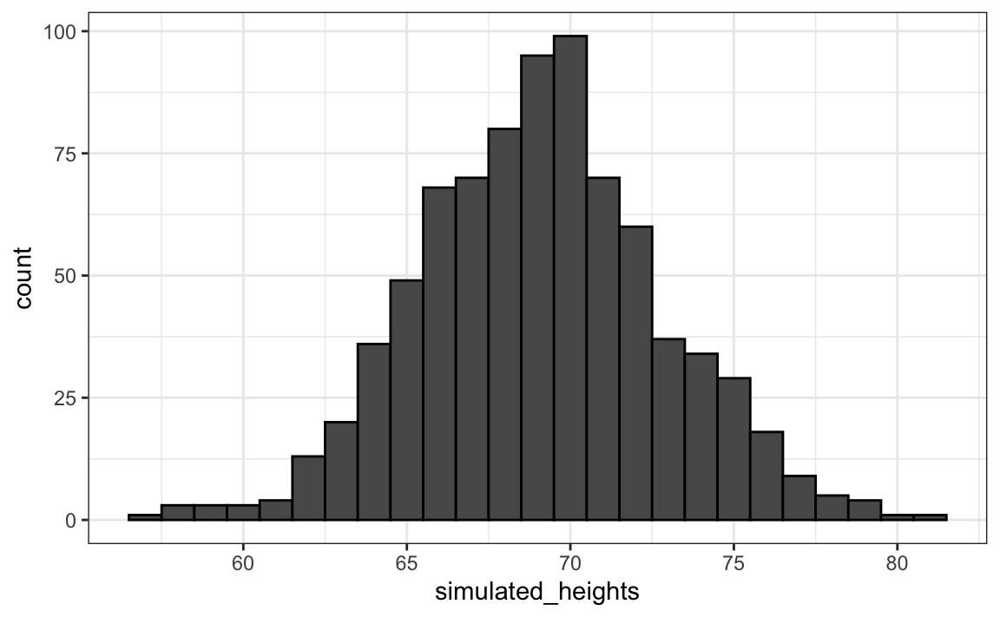
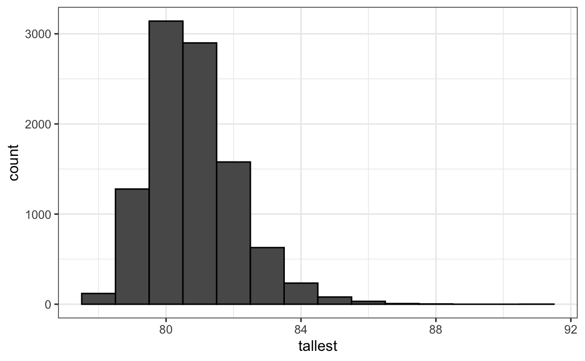

Capítulo 13 Probabilidad
En los juegos de azar, la probabilidad tiene una definición muy intuitiva. Por ejemplo, sabemos lo que significa cuando decimos que la probabilidad de que un par de dados salga siete es 1 en 6. Sin embargo, este no es el caso en otros contextos. Hoy la teoría de probabilidad se utiliza de manera mucho más amplia con la palabra probabilidad ya parte del lenguaje cotidiano. Si escribimos “¿Cuáles son las probabilidades de” en Google, la función de autocompletar nos da: “tener mellizos”, “tener gemelos” y “ganar la lotería”. Uno de los objetivos de esta parte del libro es ayudarles a comprender cómo la probabilidad es útil para entender y describir eventos del mundo real cuando realizamos análisis de datos.
Dado que saber cómo calcular las probabilidades ofrece una ventaja en los juegos de azar, a lo largo de la historia muchas personas inteligentes, incluyendo matemáticos famosos como Cardano, Fermat y Pascal, le han dedicado tiempo y energía a pensar en las matemáticas de estos juegos. Como resultado, nació la teoría de la probabilidad. La probabilidad sigue siendo muy útil en los juegos de azar modernos. Por ejemplo, en póker, podemos calcular la probabilidad de ganar una mano basado en las cartas en la mesa. Además, los casinos se basan en la teoría de la probabilidad para desarrollar juegos que casi siempre les garantizan ganancias.
La teoría de la probabilidad es útil en muchos otros contextos y, en particular, en áreas que de alguna manera dependen de los datos afectados por el azar. Todos los otros capítulos de esta parte se basan en la teoría de la probabilidad. El conocimiento de la probabilidad es, por lo tanto, indispensable para la ciencia de datos.
13.1 Probabilidad discreta
Comenzamos explorando algunos principios básicos relacionados con datos categóricos. Esta parte de la probabilidad se conoce como probabilidad discreta. Luego, esto nos ayudará a comprender la teoría de la probabilidad que luego presentaremos para datos numéricos y continuos, los cuales son mucho más comunes en las aplicaciones de ciencia de datos. La probabilidad discreta es más útil en los juegos de cartas y, por ende, usamos estos como ejemplos.
13.1.1 Frecuencia relativa
Si bien la palabra probabilidad se usa en el lenguaje cotidiano, responder a preguntas sobre la probabilidad es difícil, si no imposible. Aquí discutimos una definición matemática de probabilidad que nos permite dar respuestas precisas a ciertas preguntas.
Por ejemplo, si tengo 2 canicas rojas y 3 canicas azules dentro de una urna49 (muchos libros de probabilidad usan este término arcaico, así que nosotros también) y escojo una al azar, ¿cuál es la probabilidad de elegir una roja? Nuestra intuición nos dice que la respuesta es 2/5 o 40%. Se puede dar una definición precisa al señalar que hay cinco resultados posibles de los cuales dos satisfacen la condición necesaria para el evento “escoger una canica roja”. Dado que cada uno de los cinco resultados tiene la misma probabilidad de ocurrir, concluimos que la probabilidad es .4 para rojo y .6 para azul.
Una forma más tangible de pensar en la probabilidad de un evento es la proporción de veces que ocurre el evento cuando repetimos el experimento un número infinito de veces, independientemente y bajo las mismas condiciones.
13.1.2 Notación
Usamos la notación \(\mbox{Pr}(A)\) para denotar la probabilidad de que suceda evento \(A\). Usamos el término general evento para referirnos a cosas que pueden suceder cuando algo ocurre por casualidad. En nuestro ejemplo anterior, el evento fue “escoger una canica roja”. En una encuesta política en la que llamamos al azar a 100 probables votantes estadounidenses, un ejemplo de un evento es “llamar a 48 demócratas y 52 republicanos”.
En aplicaciones de ciencia de datos, frecuentemente trabajaremos con variables continuas. Estos eventos a menudo serán cosas como “es esta persona más alta que 6 pies”. En ese caso, escribimos eventos en una forma más matemática: \(X \geq 6\). Veremos más de estos ejemplos a continuación. Aquí nos enfocamos en datos categóricos.
13.1.3 Distribuciones de probabilidad
Si conocemos la frecuencia relativa de las diferentes categorías, definir una distribución para resultados categóricos es relativamente sencillo. Simplemente asignamos una probabilidad a cada categoría. En los casos que pueden considerarse como canicas en una urna, para cada tipo de canica, su proporción define la distribución.
Si estamos llamando al azar a votantes probables de una población que es 44% demócratas, 44% republicanos, 10% indecisos y 2% del partido verde, estas proporciones definen la probabilidad para cada grupo. La distribución de probabilidad es:
| Pr (elegir un republicano) | = | 0.44 |
| Pr (elegir un demócrata) | = | 0.44 |
| Pr (elegir un indeciso) | = | 0.10 |
| Pr (elegir un verde) | = | 0.02 |
13.2 Simulaciones Monte Carlo para datos categóricos
Las computadoras ofrecen una forma de realizar el experimento aleatorio sencillo descrito anteriormente: elegir una canica al azar de una urna que contiene tres canicas azules y dos rojas. Los generadores de números aleatorios nos permiten imitar el proceso de escoger al azar.
Un ejemplo es la función sample en R. Demostramos su uso en el código a continuación. Primero, usamos la función rep para generar la urna:
y luego usamos sample para escoger una canica al azar:
Esta línea de código produce un resultado aleatorio. Queremos repetir este experimento un número infinito de veces, pero es imposible repetirlo para siempre. En cambio, repetimos el experimento un número suficientemente grande de veces para que los resultados sean prácticamente equivalentes a repetirlo para siempre. Este es un ejemplo de una simulación Monte Carlo.
Gran parte de lo que estudian los estadísticos matemáticos y teóricos, que no discutimos en este libro, se relaciona con proveer definiciones rigurosas de “prácticamente equivalente”, así como estudiar cuán cerca nos llevan un gran número de experimentos a lo que sucede en el límite. Más adelante en esta sección, ofrecemeos un acercamiento práctico para decidir qué es “lo suficientemente grande”.
Para realizar nuestra primera simulación Monte Carlo, utilizamos la función replicate, que nos permite repetir la misma tarea varias veces. Aquí, repetimos el evento aleatorio \(B =\) 10,000 veces:
Ahora podemos ver si nuestra definición realmente está de acuerdo con esta aproximación de simulación Monte Carlo. Nosotros podemos usar table para ver la distribución:
y prop.table nos da las proporciones:
Los números anteriores son probabilidades estimadas proveídas por una simulación Monte Carlo. La teoría estadística, que no discutimos aquí, nos dice que en lo que \(B\) se hace más grande, las estimaciones se acercan a 3/5 = .6 y 2/5 = .4.
Aunque este es un ejemplo sencillo y no muy útil, luego utilizaremos simulaciones Monte Carlo para estimar probabilidades en casos en los cuales es difícil calcular cantidades exactas. Antes de profundizar en ejemplos más complejos, usaremos algunos sencillos para demostrar las herramientas informáticas disponibles en R.
13.2.1 Fijar la semilla aleatoria
Antes de continuar, explicaremos brevemente la siguiente línea importante de código:
A lo largo de este libro, utilizamos generadores de números aleatorios. Esto implica que muchos de los resultados que presentamos pueden cambiar por casualidad y una versión congelada del libro puede mostrar un resultado diferente al que obtienen cuando intenten codificar como observan en el libro. Esto no es un problema ya que los resultados son aleatorios y pueden cambiar. Sin embargo, si quieren asegurarse de que los resultados sean exactamente los mismos cada vez que los ejecuten, pueden fijar la semilla (seed en inglés) de generación de números aleatorios de R en un número específico. Arriba la fijamos en 1986. Queremos evitar usar la misma semilla cada vez. Una forma popular de escoger la semilla es restando el mes y el día del año. Por ejemplo, para el 20 de diciembre de 2018 fijamos la semilla en 1986: \(2018 - 12 - 20 = 1986\).
Pueden obtener más información sobre cómo fijar la semilla mirando la documentación:
En los ejercicios, es posible que les pidamos que fijen la semilla para asegurar que sus resultados sean exactamente lo que esperan.
13.2.2 Con y sin reemplazo
La función sample tiene un argumento que nos permite elegir más de un elemento de la urna. Sin embargo, por defecto, esta selección ocurre sin reemplazo: después de seleccionar una canica, no se vuelve a colocar en la urna. Observen lo que sucede cuando pedimos seleccionar cinco canicas al azar:
sample(beads, 5)
#> [1] "red" "blue" "blue" "blue" "red"
sample(beads, 5)
#> [1] "red" "red" "blue" "blue" "blue"
sample(beads, 5)
#> [1] "blue" "red" "blue" "red" "blue"Esto resulta en reordenamientos que siempre tienen tres canicas azules y dos rojas. Si pedimos que se seleccionen seis canicas, obtenemos un error:
Error in sample.int(length(x), size, replace, prob) : cannot take a sample larger than the population when 'replace = FALSE'
Sin embargo, la función sample se puede usar directamente, sin el uso de replicate, para repetir el mismo experimento de elegir 1 de las 5 canicas, continuamente, en las mismas condiciones. Para hacer esto, muestreamos con reemplazo: se devuelve la canica a la urna después de seleccionarla.
Podemos decirle a sample que haga esto cambiando el argumento replace, que por defecto es FALSE, a replace = TRUE:
events <- sample(beads, B, replace = TRUE)
prop.table(table(events))
#> events
#> blue red
#> 0.602 0.398No sorprende que obtengamos resultados muy similares a los obtenidos previamente con replicate.
13.3 Independencia
Decimos que dos eventos son independientes si el resultado de uno no afecta al otro. El ejemplo clásico es el lanzamiento de monedas. Cada vez que lanzamos una moneda, la probabilidad de ver cara es 1/2, independientemente de los resultados de lanzamientos anteriores. Lo mismo es cierto cuando recogemos canicas de una urna con reemplazo. En el ejemplo anterior, la probabilidad de rojo es 0.40 independientemente de las selecciones anteriores.
Muchos ejemplos de eventos que no son independientes provienen de juegos de cartas. Cuando repartimos la primera carta, la probabilidad de obtener una K es 1/13 ya que hay trece probabilidades: Dos, Tres, \(\dots\), Diez, J, Q, K y As. Pero si repartimos una K como la primera carta y no la reemplazamos en la baraja, las probabilidades de que una segunda carta sea K es menor porque solo quedan tres Ks: la probabilidad es 3 de 51. Estos eventos por lo tanto no son independientes: el primer resultado afecta al siguiente.
Para ver un caso extremo de eventos no independientes, consideren nuestro ejemplo de escoger cinco canicas al azar sin reemplazo:
Si tienen que adivinar el color de la primera canica, predecirán azul ya que azul tiene un 60% de probabilidad. Pero si les mostramos el resultado de los últimos cuatro resultados:
¿aún adivinarían azul? Por supuesto que no. Ahora saben que la probabilidad de rojo es 1 ya que la única canica que queda es roja. Los eventos no son independientes, por lo que las probabilidades cambian.
13.4 Probabilidades condicionales
Cuando los eventos no son independientes, las probabilidades condicionales son útiles. Ya vimos un ejemplo de una probabilidad condicional: calculamos la probabilidad de que una segunda carta repartida sea K dado que la primera fue K. En la probabilidad, usamos la siguiente notación:
\[ \mbox{Pr}(\mbox{Card 2 is a king} \mid \mbox{Card 1 is a king}) = 3/51 \]
Utilizamos el \(\mid\) como abreviatura de “dado eso” o “condicional en”.
Cuando dos eventos, digamos \(A\) y \(B\), son independientes, tenemos:
\[ \mbox{Pr}(A \mid B) = \mbox{Pr}(A) \]
Esta es la forma matemática de decir: el hecho de que \(B\) sucedió no afecta la probabilidad de que \(A\) suceda. De hecho, esto puede considerarse la definición matemática de independencia.
13.5 Reglas de la adición y la multiplicación
13.5.1 Regla de la multiplicación
Si queremos saber la probabilidad de que ocurran dos eventos, digamos \(A\) y \(B\), podemos usar la regla de la multiplicación:
\[ \mbox{Pr}(A \mbox{ and } B) = \mbox{Pr}(A)\mbox{Pr}(B \mid A) \] Usemos el juego de cartas Blackjack como ejemplo. En Blackjack, se les asignan dos cartas al azar. Después de ver lo que tienen, pueden pedir más cartas. El objetivo es acercarse más a 21 que el croupier, sin pasar. Las cartas con figuras o figuras (face cards en inglés) valen 10 puntos y las Ases valen 11 o 1 (uno elige).
Entonces, en Blackjack, para calcular las probablidades de obtener un 21 recibiendo un As y luego una carta de figura, calculamos la probabilidad de que la primera carta sea un As y multiplicamos por la probabilidad de sacar una carta de figura o un 10 dado que la primera fue un As: \(1/13 \times 16/51 \approx 0.025\).
La regla de la multiplicación también se aplica a más de dos eventos. Podemos usar la inducción para incluir más eventos:
\[ \mbox{Pr}(A \mbox{ and } B \mbox{ and } C) = \mbox{Pr}(A)\mbox{Pr}(B \mid A)\mbox{Pr}(C \mid A \mbox{ and } B) \]
13.5.2 Regla de la multiplicación bajo independencia
Cuando tenemos eventos independientes, la regla de la multiplicación se hace más sencilla:
\[ \mbox{Pr}(A \mbox{ and } B \mbox{ and } C) = \mbox{Pr}(A)\mbox{Pr}(B)\mbox{Pr}(C) \]
Pero debemos tener mucho cuidado antes de usar esto ya que suponer independencia cuando en realidad no existe puede dar como resultado cálculos de probabilidad muy diferentes e incorrectos.
Como ejemplo, imaginen un caso judicial en el que se describe al sospechoso como teniendo bigote y barba. El acusado tiene bigote y barba y la fiscalía trae a un “experto” que testifica que 1/10 hombres tienen barba y 1/5 tienen bigote, así que usando la regla de la multiplicación concluimos que solo \(1/10 \times 1/5\) o 0.02 tienen ambos.
¡Pero para multiplicar así necesitamos suponer independencia! Digamos que la probabilidad condicional de que un hombre tenga un bigote condicionado en que tenga barba es .95. Entonces el cálculo correcto de la probabilidad resulta en un número mucho mayor: \(1/10 \times 95/100 = 0.095\).
La regla de la multiplicación también nos da una fórmula general para calcular probabilidades condicionales:
\[ \mbox{Pr}(B \mid A) = \frac{\mbox{Pr}(A \mbox{ and } B)}{ \mbox{Pr}(A)} \]
Para ilustrar cómo usamos estas fórmulas y conceptos en la práctica, utilizaremos varios ejemplos relacionados con los juegos de cartas.
13.5.3 Regla de la adición
La regla de la adición nos dice que:
\[ \mbox{Pr}(A \mbox{ or } B) = \mbox{Pr}(A) + \mbox{Pr}(B) - \mbox{Pr}(A \mbox{ and } B) \]
Esta regla es intuitiva: piense en un diagrama de Venn. Si simplemente sumamos las probabilidades, contamos la intersección dos veces, por lo que debemos restar una instancia.

13.6 Combinaciones y permutaciones
En nuestro primer ejemplo, imaginamos una urna con cinco canicas. Recuerden que para calcular la distribución de probabilidad de un sorteo, simplemente enumeramos todas las probabilidades. Hubo 5 y entonces para cada evento contamos cuántas de estas probabilidades estaban asociadas con el evento. La probabilidad de elegir una canica azul es 3/5 porque de los cinco resultados posibles, tres fueron azules.
Para casos más complicados, los cálculos no son tan sencillos. Por ejemplo, ¿cuál es la probabilidad de que si escojo cinco cartas sin reemplazo, obtengo todas cartas del mismo palo (suit en inglés), lo que se conoce como “flush” en el póker? En un curso de probabilidad discreta, se aprende la teoría sobre cómo hacer estos cálculos. Aquí nos enfocamos en cómo usar el código R para calcular las respuestas.
Primero, construyamos una baraja de cartas. Para esto, usaremos las funciones expand.grid y paste. Usamos paste para crear cadenas uniendo cadenas más pequeñas. Para hacer esto, tomamos el número y el tipo de una carta y creamos el nombre de la carta de esta manera:
paste también funciona en pares de vectores que realizan la operación elemento por elemento:
La función expand.grid nos da todas las combinaciones de entradas de dos vectores. Por ejemplo, si tienen pantalones azules y negros y camisas blancas, grises y a cuadros (plaid en inglés), todas sus combinaciones son:
expand.grid(pants = c("blue", "black"), shirt = c("white", "grey", "plaid"))
#> pants shirt
#> 1 blue white
#> 2 black white
#> 3 blue grey
#> 4 black grey
#> 5 blue plaid
#> 6 black plaidAquí es como generamos una baraja de cartas:
suits <- c("Diamonds", "Clubs", "Hearts", "Spades")
numbers <- c("Ace", "Deuce", "Three", "Four", "Five", "Six", "Seven",
"Eight", "Nine", "Ten", "Jack", "Queen", "King")
deck <- expand.grid(number=numbers, suit=suits)
deck <- paste(deck$number, deck$suit)Con la baraja construida, podemos verificar que la probabilidad de una K sea la primera carta es 1/13 calculando la proporción de posibles resultados que satisfagan nuestra condición:
Ahora, ¿qué tal la probabilidad condicional de que la segunda carta sea una K dado que la primera era una K? Anteriormente, dedujimos que si una K ya está fuera de la baraja y quedan 51 cartas, entonces la probabilidad es 3/51. Confirmemos enumerando todos los resultados posibles.
Para hacer esto, podemos usar la función permutations del paquete gtools. Para cualquier lista de tamaño n, esta función calcula todas las diferentes combinaciones que podemos obtener cuando seleccionamos r artículos. Aquí están todas las formas en que podemos elegir dos números de una lista que consiste en 1,2,3:
library(gtools)
permutations(3, 2)
#> [,1] [,2]
#> [1,] 1 2
#> [2,] 1 3
#> [3,] 2 1
#> [4,] 2 3
#> [5,] 3 1
#> [6,] 3 2Observen que el orden importa aquí: 3,1 es diferente de 1,3. Además, tengan en cuenta que (1,1), (2,2) y (3,3) no aparecen porque una vez que elegimos un número, no puede volver a aparecer.
Opcionalmente, podemos agregar un vector. Si desean ver cinco números de teléfono aleatorios (de siete dígitos) de todos los números de teléfono posibles (sin repeticiones), pueden escribir:
all_phone_numbers <- permutations(10, 7, v = 0:9)
n <- nrow(all_phone_numbers)
index <- sample(n, 5)
all_phone_numbers[index,]
#> [,1] [,2] [,3] [,4] [,5] [,6] [,7]
#> [1,] 1 3 8 0 6 7 5
#> [2,] 2 9 1 6 4 8 0
#> [3,] 5 1 6 0 9 8 2
#> [4,] 7 4 6 0 2 8 1
#> [5,] 4 6 5 9 2 8 0En lugar de usar los números del 1 al 10, el valor por defecto, R usa lo que proveemos a través de v: los dígitos de 0 a 9.
Para calcular todas las formas posibles en que podemos elegir dos cartas cuando el orden importa, escribimos:
Esta es una matriz con dos columnas y 2652 filas. Con una matriz podemos obtener la primera y segunda carta así:
Ahora los casos para los cuales la primera carta es una K se pueden calcular así:
Para obtener la probabilidad condicional, calculamos qué fracción de estos tiene una K como la segunda carta:
que es exactamente 3/51, como ya habíamos deducido. Tengan en cuenta que el código anterior es equivalente a:
que usa mean en lugar de sum y es una versión R de:
\[ \frac{\mbox{Pr}(A \mbox{ and } B)}{ \mbox{Pr}(A)} \]
¿Y qué tal si el orden no importa? Por ejemplo, en Blackjack si le dan un As y una carta de figura como su primera mano, se llama un Natural 21 y ganan automáticamente. Si quisiéramos calcular la probabilidad de que esto suceda, enumeraríamos las combinaciones, no las permutaciones, ya que el orden no importa.
En la segunda línea, el resultado no incluye (2,1) porque (1,2) ya se enumeró. Lo mismo aplica a (3,1) y (3,2).
Entonces, para calcular la probabilidad de un Natural 21 en Blackjack, podemos hacer esto:
aces <- paste("Ace", suits)
facecard <- c("King", "Queen", "Jack", "Ten")
facecard <- expand.grid(number = facecard, suit = suits)
facecard <- paste(facecard$number, facecard$suit)
hands <- combinations(52, 2, v = deck)
mean(hands[,1] %in% aces & hands[,2] %in% facecard)
#> [1] 0.0483En la última línea, suponemos que el As es la primera carta que recibimos. Esto lo sabemos porque, sabiendo como combination enumera las probabilidades, entendemos que enumerará este caso primero. Pero para estar seguros, podríamos haber producido la misma respuesta al escribir lo siguiente:
mean((hands[,1] %in% aces & hands[,2] %in% facecard) |
(hands[,2] %in% aces & hands[,1] %in% facecard))
#> [1] 0.048313.6.1 Ejemplo Monte Carlo
En lugar de usar combinations para deducir la probabilidad exacta de un Natural 21, podemos usar un Monte Carlo para estimar esta probabilidad. En este caso, escogemos dos cartas una y otra vez y notamos cuántos 21s tenemos. Podemos usar la función sample para escoger dos cartas sin reemplazos:
Y luego verificar si una carta es un As y la otra una figura o un 10. De ahora en adelante, incluimos 10 cuando decimos carta de figura o figura. Ahora necesitamos verificar ambas probabilidades:
(hands[1] %in% aces & hands[2] %in% facecard) |
(hands[2] %in% aces & hands[1] %in% facecard)
#> [1] FALSESi repetimos esto 10,000 veces, obtenemos una muy buena aproximación de la probabilidad de un Natural 21.
Comencemos escribiendo una función que escoje una mano y devuelve TRUE si obtenemos un 21. La función no necesita argumentos porque usa objetos definidos en el entorno global.
blackjack <- function(){
hand <- sample(deck, 2)
(hand[1] %in% aces & hand[2] %in% facecard) |
(hand[2] %in% aces & hand[1] %in% facecard)
}Aquí tenemos que verificar ambas probabilidades: As primero o As segundo porque no estamos usando la función combinations. La función devuelve TRUE si obtenemos un 21 y FALSE de otra manera:
Ahora podemos jugar este juego, digamos, 10,000 veces:
13.7 Ejemplos
En esta sección, describimos dos ejemplos populares de probabilidad discreta: el problema Monty Hall y el problema del cumpleaños. Usamos R para ayudar a ilustrar los conceptos matemáticos.
13.7.1 Problema Monty Hall
En la década de 1970 en EE.UU, hubo un programa de concursos llamado “Let’s Make a Deal” y Monty Hall era el anfitrión. En algún momento del juego, se le pedía al concursante que eligiera una de tres puertas. Detrás de una puerta había un premio, mientras que detrás de las otras puertas tenían una cabra que señalaba que el concursante había perdido. Después de que el concursante eligiera una puerta y antes de revelar si esa puerta contenía un premio, Monty Hall abría una de las otras dos puertas y le mostraba al concursante que no había ningún premio detrás de esa puerta. Luego le preguntaba al concursante: “¿Quiere cambiar de puerta?” ¿Qué harían Uds.?
Podemos usar la probabilidad para mostrar que si se quedan con la opción de la puerta original, sus probabilidades de ganar un premio siguen siendo 1 en 3. Sin embargo, si cambian a la otra puerta, ¡sus probabilidades de ganar duplican a 2 en 3! Esto parece contradictorio. Muchas personas piensan incorrectamente que ambas probabilidades son 1 en 2 ya que uno elige entre 2 opciones. Pueden ver una explicación matemática detallada en Khan Academy50 o leer una en Wikipedia51. A continuación, usamos una simulación Monte Carlo para ver qué estrategia es mejor. Tengan en cuenta que este código se escribe con más detalle de lo necesario para fines pedagógicos.
Comencemos con la estrategia de no cambiar de puerta:
B <- 10000
monty_hall <- function(strategy){
doors <- as.character(1:3)
prize <- sample(c("car", "goat", "goat"))
prize_door <- doors[prize == "car"]
my_pick <- sample(doors, 1)
show <- sample(doors[!doors %in% c(my_pick, prize_door)],1)
stick <- my_pick
stick == prize_door
switch <- doors[!doors%in%c(my_pick, show)]
choice <- ifelse(strategy == "stick", stick, switch)
choice == prize_door
}
stick <- replicate(B, monty_hall("stick"))
mean(stick)
#> [1] 0.342
switch <- replicate(B, monty_hall("switch"))
mean(switch)
#> [1] 0.668Mientras escribimos el código, notamos que las líneas que comienzan con my_pick y show no afectan la última operación lógica cuando nos atenemos a nuestra elección original. De esto, debemos darnos cuenta de que la probabilidad es de 1 en 3, la misma con la cual comenzamos. Cuando cambiamos, la estimación Monte Carlo confirma el cálculo de 2/3. Esto nos ayuda entender el problema mejor al mostrar que estamos quitando una puerta, show, que definitivamente no esconde un premio de nuestras opciones. También vemos que, a menos que lo hagamos bien cuando elegimos por primera vez, ustedes ganan: 1 - 1/3 = 2/3.
13.7.2 Problema de cumpleaños
Imagínense que están en un salón de clase con 50 personas. Si suponemos que este es un grupo de 50 personas seleccionadas al azar, ¿cuál es la probabilidad de que al menos dos personas tengan el mismo cumpleaños? Aunque es algo avanzado, podemos deducir esto matemáticamente. Haremos esto más tarde, pero aquí usamos una simulación Monte Carlo. Para simplificar, suponemos que nadie nació el 29 de febrero. En realidad esto no cambia mucho la respuesta.
Primero, tengan en cuenta que los cumpleaños se pueden representar como números entre 1 y 365, por lo que se puede obtener una muestra de 50 cumpleaños de esta manera:
Para verificar si en este set particular de 50 personas tenemos al menos dos con el mismo cumpleaños, podemos usar la función duplicated, que devuelve TRUE siempre que un elemento de un vector sea un duplicado. Aquí hay un ejemplo:
La segunda vez que aparecen 1 y 3, obtenemos un TRUE. Entonces, para verificar si dos cumpleaños son iguales, simplemente usamos las funciones any y duplicated así:
En este caso, vemos que sucedió. Al menos dos personas tuvieron el mismo cumpleaños.
Para estimar la probabilidad de un cumpleaños compartido en el grupo, repetimos este experimento muestreando sets de 50 cumpleaños una y otra vez:
B <- 10000
same_birthday <- function(n){
bdays <- sample(1:365, n, replace=TRUE)
any(duplicated(bdays))
}
results <- replicate(B, same_birthday(50))
mean(results)
#> [1] 0.969¿Esperaban que la probabilidad fuera tan alta?
Las personas tienden a subestimar estas probabilidades. Para tener una idea de por qué es tan alta, piensen en lo que sucede cuando el tamaño del grupo se acerca a 365. Con 365, se nos acaban los días y la probabilidad es una.
Digamos que queremos usar este conocimiento para apostar con amigos sobre si dos personas en un grupo tienen el mismo cumpleaños. ¿Con un grupo de qué tamaño son las probabilidades superiores a 50%? ¿Superiores a 75%?
Empecemos creando una tabla de consulta. Rápidamente podemos crear una función para calcular esto para cualquier tamaño de grupo:
Usando la función sapply, podemos realizar operaciones elemento por elemento en cualquier función:
Ahora podemos hacer una gráfica de las probabilidades estimadas de dos personas tener el mismo cumpleaños en un grupo de tamaño \(n\):

Ahora calculemos las probabilidades exactas en lugar de usar aproximaciones Monte Carlo. No solo obtenemos la respuesta exacta usando matemáticas, sino que los cálculos son mucho más rápidos ya que no tenemos que generar experimentos.
Para simplificar las matemáticas, en lugar de calcular la probabilidad de que ocurra, calcularemos la probabilidad de que no ocurra. Para esto, usamos la regla de la multiplicación.
Comencemos con la primera persona. La probabilidad de que persona 1 tenga un cumpleaños único es 1. La probabilidad de que persona 2 tenga un cumpleaños único, dado que ya se le asignó un día a persona 1, es 364/365. Luego, dado que las dos primeras personas tienen cumpleaños únicos, persona 3 tiene 363 días para elegir. Continuamos de esta manera y encontramos que las probabilidades de que todas las 50 personas tengan un cumpleaños único son:
\[ 1 \times \frac{364}{365}\times\frac{363}{365} \dots \frac{365-n + 1}{365} \]
Podemos escribir una función que haga esto para cualquier número:
exact_prob <- function(n){
prob_unique <- seq(365,365-n+1)/365
1 - prod( prob_unique)
}
eprob <- sapply(n, exact_prob)
qplot(n, prob) + geom_line(aes(n, eprob), col = "red")
Este gráfico muestra que la simulación Monte Carlo ofrece una muy buena estimación de la probabilidad exacta. Si no hubiera sido posible calcular las probabilidades exactas, aún habríamos podido estimar con precisión las probabilidades.
13.8 Infinito en la práctica
La teoría descrita aquí requiere repetir experimentos una y otra vez para siempre. En la práctica no podemos hacer esto. En los ejemplos anteriores, utilizamos \(B=10,000\) experimentos Monte Carlo y resultó que esto nos dio estimaciones precisas. Cuanto mayor sea este número, más precisa será la estimación hasta que la aproximación sea tan buena que sus computadoras no podrán notar la diferencia. Pero en cálculos más complejos, 10,000 puede ser insuficiente. Además, para algunos cálculos, 10,000 experimentos podrían no ser computacionalmente factibles. En la práctica, no sabremos cuál es la respuesta, por lo que no sabremos si nuestra estimación Monte Carlo es precisa. Sabemos que entre más grande sea \(B\), mejor será la aproximación. ¿Pero cuán grande necesitamos que sea? Esta es realmente una pregunta desafiante y frecuentemente contestarla requiere una formación avanzada en estadística teórica.
Un enfoque práctico que describiremos aquí es verificar la estabilidad de la estimación. A continuación ofrecemos un ejemplo con el problema de cumpleaños para un grupo de 25 personas.
B <- 10^seq(1, 5, len = 100)
compute_prob <- function(B, n=25){
same_day <- replicate(B, same_birthday(n))
mean(same_day)
}
prob <- sapply(B, compute_prob)
qplot(log10(B), prob, geom = "line")
En este gráfico, podemos ver que los valores comienzan a estabilizarse (es decir, varían menos de .01) alrededor de 1000. Noten que la probabilidad exacta, que en este caso sabemos, es 0.569.
13.9 Ejercicios
1. Se escoge una canica al azar de una caja que contiene: 3 canicas cian, 5 canicas magenta y 7 canicas amarillas. ¿Cuál es la probabilidad de que la canica sea cian?
2. ¿Cuál es la probabilidad de que la canica no sea cian?
3. En lugar de escoger solo una canica, escoja dos canicas. Saque la primera canica sin devolverla a la caja. Este es un muestreo sin reemplazo. ¿Cuál es la probabilidad de que la primera canica sea cian y la segunda no sea cian?
4. Ahora repita el experimento, pero esta vez, después de sacar la primera canica y anotar el color, devuélvala a la caja y agite la caja. Este es un muestreo con reemplazo. ¿Cuál es la probabilidad de que la primera canica sea cian y la segunda canica no sea cian?
5. Dos eventos \(A\) y \(B\) son independientes si \(\mbox{Pr}(A \mbox{ and } B) = \mbox{Pr}(A) P(B)\). ¿Bajo qué situación son independientes la selección?
- No reemplaza el articulo seleccionado.
- Reemplaza el articulo seleccionado.
- Ninguno.
- Ambos.
6. Digamos que ha sacado 5 canicas de la caja, con reemplazo, y todas han sido amarillas. ¿Cuál es la probabilidad de que la próxima sea amarilla?
7. Si lanza un dado de 6 lados seis veces, ¿cuál es la probabilidad de no ver un 6?
8. Dos equipos de baloncesto, digamos los Celtics y los Cavs, están jugando una serie de siete juegos. Los Cavs son un mejor equipo y tienen un 60% de probabilidad de ganar cada juego. ¿Cuál es la probabilidad de que los Celtics ganen al menos un juego?
9. Cree una simulación Monte Carlo para confirmar su respuesta al problema anterior. Utilizar B <- 10000 simulaciones. Sugerencia: use el siguiente código para generar los resultados de los primeros cuatro juegos:
Los Celtics deben ganar uno de estos 4 juegos.
10. Dos equipos de baloncesto, digamos los Cavs y los Warriors, están jugando una serie de campeonato de siete juegos. El primero en ganar cuatro juegos, por ende, gana la serie. Los equipos son igualmente buenos, por lo que cada uno tiene una probabilidad de 50-50 de ganar cada juego. Si los Cavs pierden el primer juego, ¿cuál es la probabilidad de que ganen la serie?
11. Confirme los resultados de la pregunta anterior con una simulación Monte Carlo.
12. Dos equipos, \(A\) y \(B\), están jugando una serie de siete juegos. Equipo \(A\) es mejor que equipo \(B\) y tiene un \(p>0.5\) probabilidad de ganar cada juego. Dado un valor \(p\), la probabilidad de que el equipo no favorito \(B\) gane la serie se puede calcular con la siguiente función basada en una simulación Monte Carlo:
prob_win <- function(p){
B <- 10000
result <- replicate(B, {
b_win <- sample(c(1,0), 7, replace = TRUE, prob = c(1-p, p))
sum(b_win)>=4
})
mean(result)
}Use la función sapply para calcular la probabilidad, llámela Pr, de ganar para p <- seq(0.5, 0.95, 0.025). Luego grafique el resultado.
13. Repita el ejercicio anterior, pero ahora mantenga la probabilidad fija en p <- 0.75 y calcule la probabilidad para diferentes números de juegos necesarios para acabar la serie: ganar 1 juego, ganar 2 de 3 juegos, ganar 3 de 5 juegos, … Específicamente, N <- seq(1, 25, 2). Sugerencia: use esta función:
13.10 Probabilidad continua
En la sección 8.4, explicamos por qué al resumir una lista de valores numéricos, como las alturas, no es útil construir una distribución que defina una proporción para cada resultado posible. Por ejemplo, imagínemos que medimos a cada persona en una población grande, digamos de tamaño \(n\), con una precisión extremadamente alta. Como no hay dos personas con exactamente la misma altura, debemos asignar la proporción \(1/n\) a cada valor observado y como consecuencia no se obtiene ningún resumen útil. Del mismo modo, al definir distribuciones de probabilidad, no es útil asignar una probabilidad muy pequeña a cada altura.
Al igual que cuando se usan distribuciones para resumir datos numéricos, es mucho más práctico definir una función que opere en intervalos en lugar de valores individuales. La forma estándar de hacerlo es utilizando la función de distribución acumulada, o CDF por sus siglas en inglés.
Describimos la función de distribución acumulada empírica, o eCDF, en la Sección 8.4 como un resumen básico de una lista de valores numéricos. Como ejemplo, anteriormente definimos la distribución de altura para los estudiantes varones adultos. Aquí definimos el vector \(x\) para contener estas alturas:
library(tidyverse)
library(dslabs)
data(heights)
x <- heights %>% filter(sex=="Male") %>% pull(height)Definimos la función de distribución acumulada empírica como:
que, por cualquier valor a, da la proporción de valores en la lista x que son más pequeños o iguales que a.
Tengan en cuenta que todavía no hemos introducido la probabilidad en el contexto de los CDF. Hagamos esto preguntando lo siguiente: ¿si elijo a uno de los estudiantes varones al azar, cuál es la probabilidad de que sea más alto que 70.5 pulgadas? Debido a que cada estudiante tiene la misma probabilidad de ser elegido, la respuesta a esto es equivalente a la proporción de estudiantes que son más altos que 70.5 pulgadas. Usando el CDF obtenemos una respuesta escribiendo:
Una vez que se defina un CDF, podemos usar esto para calcular la probabilidad de cualquier subconjunto. Por ejemplo, la probabilidad de que un estudiante esté entre altura a y altura b es:
Como podemos calcular la probabilidad de cualquier evento posible de esta manera, la función de probabilidad acumulada define la distribución de probabilidad para elegir una altura al azar de nuestro vector de alturas x.
13.11 Distribuciones teóricas continuas
En la sección 8.8 introdujimos la distribución normal como una aproximación útil a muchas distribuciones naturales, incluyendo la altura. La distribución acumulada para la distribución normal se define mediante una fórmula matemática que en R se puede obtener con la función pnorm. Decimos que una cantidad aleatoria se distribuye normalmente con un promedio m y desviación estándar s si su distribución de probabilidad se define por:
Esto es útil porque si estamos dispuestos a usar la aproximación normal para, por ejemplo, la altura, no necesitamos todo el conjunto de datos para responder a preguntas como: ¿cuál es la probabilidad de que un estudiante seleccionado al azar sea más alto que 70 pulgadas? Solo necesitamos la altura promedio y la desviación estándar:
13.11.1 Distribuciones teóricas como aproximaciones
La distribución normal se deriva matemáticamente: no necesitamos datos para definirla. Para los científicos de datos, casi todo lo que hacemos en la práctica involucra datos. Los datos son siempre, desde un punto de vista técnico, discretos. Por ejemplo, podríamos considerar nuestros datos de altura categóricos con cada altura específica como una categoría única. La distribución de probabilidad se define por la proporción de estudiantes que indican cada altura. Aquí hay una gráfica de esa distribución de probabilidad:

Mientras que la mayoría de los estudiantes redondearon sus alturas a la pulgada más cercana, otros indicaron valores con más precisión. Un estudiante indicó que su altura era 69.6850393700787 pulgadas, que equivale 177 centímetros. La probabilidad asignada a esta altura es 0.001 o 1 en 812. La probabilidad de 70 pulgadas es mucho mayor en 0.106, pero ¿tiene sentido pensar que la probabilidad de tener exactamente 70 pulgadas es diferente de 69.6850393700787? Claramente, es mucho más útil para fines de análisis de datos tratar este resultado como una variable numérica continua, teniendo en cuenta que muy pocas personas, o tal vez ninguna, son exactamente 70 pulgadas, y que la razón por la que obtenemos más valores en 70 es porque las personas redondean a la pulgada más cercana.
Con distribuciones continuas, la probabilidad de un valor singular no se define. Por ejemplo, no tiene sentido preguntar cuál es la probabilidad de que un valor distribuido normalmente sea 70. En cambio, definimos probabilidades para intervalos. Por lo tanto, podríamos preguntar cuál es la probabilidad de que alguien mida entre 69.5 y 70.5.
En casos como la altura, en los que los datos se redondean, la aproximación normal es particularmente útil si estamos trabajando con intervalos que incluyen exactamente un número redondo. Por ejemplo, la distribución normal es útil para aproximar la proporción de estudiantes que indican valores en intervalos como los tres siguientes:
mean(x <= 68.5) - mean(x <= 67.5)
#> [1] 0.115
mean(x <= 69.5) - mean(x <= 68.5)
#> [1] 0.119
mean(x <= 70.5) - mean(x <= 69.5)
#> [1] 0.122Tengan en cuenta lo mucho que nos acercamos con la aproximación normal:
pnorm(68.5, m, s) - pnorm(67.5, m, s)
#> [1] 0.103
pnorm(69.5, m, s) - pnorm(68.5, m, s)
#> [1] 0.11
pnorm(70.5, m, s) - pnorm(69.5, m, s)
#> [1] 0.108Sin embargo, la aproximación no es tan útil para otros intervalos. Por ejemplo, observen cómo se descompone la aproximación cuando intentamos estimar:
con:
En general, llamamos a esta situación discretización. Aunque la distribución de altura real es continua, las alturas reportadas tienden a ser más comunes en valores discretos, en este caso, debido al redondeo. Con tal que sepamos cómo lidiar con esta realidad, la aproximación normal puede ser una herramienta muy útil.
13.11.2 La densidad de probabilidad
Para distribuciones categóricas, podemos definir la probabilidad de una categoría. Por ejemplo, un lanzamiento de dado, llamémoslo \(X\), puede ser 1,2,3,4,5 o 6. La probabilidad de 4 se define como:
\[ \mbox{Pr}(X=4) = 1/6 \]
El CDF entonces se puede definir fácilmente: \[ F(4) = \mbox{Pr}(X\leq 4) = \mbox{Pr}(X = 4) + \mbox{Pr}(X = 3) + \mbox{Pr}(X = 2) + \mbox{Pr}(X = 1) \]
Aunque para distribuciones continuas la probabilidad de un solo valor \(\mbox{Pr}(X=x)\) no se define, hay una definición teórica que tiene una interpretación similar. La densidad de probabilidad en \(x\) se define como la función \(f(a)\) tal que:
\[ F(a) = \mbox{Pr}(X\leq a) = \int_{-\infty}^a f(x)\, dx \]
Para aquellos que conocen el cálculo, recuerden que la integral está relacionada con una suma: es la suma de las barras con anchos que se aproximan a 0. Si no conocen el cálculo, pueden pensar en \(f(x)\) como una curva para la cual el área debajo de esa curva hasta el valor \(a\) les da la probabilidad \(\mbox{Pr}(X\leq a)\).
Por ejemplo, para usar la aproximación normal para estimar la probabilidad de que alguien sea más alto que 76 pulgadas, usamos:
que matemáticamente es el área gris a continuación:

La curva que ven es la densidad de probabilidad para la distribución normal. En R, obtenemos esto usando la función dnorm.
Aunque quizás no sea inmediatamente obvio por qué es útil conocer las densidades de probabilidad, comprender este concepto será esencial para aquellos que quieran ajustar modelos a datos para los que no hay funciones predefinidas disponibles.
13.12 Simulaciones Monte Carlo para variables continuas
R provee funciones para generar resultados normalmente distribuidos. Específicamente, la función rnorm toma tres argumentos: tamaño, promedio (predeterminado a 0) y desviación estándar (predeterminada a 1) y produce números aleatorios. Aquí tenemos un ejemplo de cómo podríamos generar datos que se parezcan a nuestras alturas:
No sorprende que la distribución se vea normal:

Esta es una de las funciones más útiles en R, ya que nos permite generar datos que imitan eventos naturales y responder a preguntas relacionadas con lo que podría suceder por casualidad al ejecutar simulaciones Monte Carlo.
Si, por ejemplo, elegimos 800 hombres al azar, ¿cuál es la distribución de la persona más alta? ¿Cuán raro es un hombre de 7 pies, un seven footer, en un grupo de 800 hombres? La siguiente simulación Monte Carlo nos ayuda a responder esa pregunta:
Tener un seven footer es bastante raro:
Aquí vemos la distribución resultante:

Noten que no parece normal.
13.13 Distribuciones continuas
Discutimos la distribución normal en la Sección 8.8 y se usó como ejemplo anteriormente. La distribución normal no es la única distribución teórica útil. Otras distribuciones continuas que podemos encontrar son t de Student (Student t en inglés), chi-cuadrada, exponencial, gamma, beta y beta-binomial. R provee funciones para calcular la densidad, los cuantiles, las funciones de distribución acumulada y para generar simulaciones Monte Carlo. R usa una convención que nos ayuda recordar los nombres: usar las letras d, q, p y r delante de una abreviatura del nombre de la distribución. Ya hemos visto las funciones dnorm, pnorm y rnorm para la distribución normal. La función qnorm nos da los cuantiles. Por lo tanto, podemos trazar una distribución así:
Para la distribución t de Student, descrito más adelante en la Sección ??, la abreviatura t se usa para que las funciones sean dt para la densidad, qt para los cuantiles, pt para la función de distribución acumulada y rt para la simulación Monte Carlo.
13.14 Ejercicios
1. Suponga que la distribución de las alturas femeninas se aproxima por una distribución normal con una media de 64 pulgadas y una desviación estándar de 3 pulgadas. Si elegimos una hembra al azar, ¿cuál es la probabilidad de que mida 5 pies o menos?
2. Suponga que la distribución de las alturas femeninas se aproxima por una distribución normal con una media de 64 pulgadas y una desviación estándar de 3 pulgadas. Si elegimos una hembra al azar, ¿cuál es la probabilidad de que mida 6 pies o más?
3. Suponga que la distribución de las alturas femeninas se aproxima por una distribución normal con una media de 64 pulgadas y una desviación estándar de 3 pulgadas. Si elegimos una hembra al azar, ¿cuál es la probabilidad de que mida entre 61 y 67 pulgadas?
4. Repita el ejercicio anterior, pero convierta todo a centímetros. Es decir, multiplique cada altura, incluyendo la desviación estándar, por 2.54. ¿Cuál es la respuesta ahora?
5. Tenga en cuenta que la respuesta a la pregunta no cambia cuando cambian las unidades. Esto tiene sentido ya que la respuesta a la pregunta no debe ser afectada por las unidades que usamos. De hecho, si se fija bien, notará que 61 y 64 están a 1 SD de distancia del promedio. Calcule la probabilidad de que una variable aleatoria distribuida normal y aleatoriamente esté dentro de 1 SD del promedio.
6. Para ver las matemáticas que explican por qué las respuestas a las preguntas 3, 4 y 5 son las mismas, supongamos que tenemos una variable aleatoria con promedio \(m\) y error estándar \(s\). Supongamos que queremos saber la probabilidad de \(X\) ser más pequeño o igual a \(a\). Recuerda que, por definición, \(a\) es \((a - m)/s\) desviaciones estandar \(s\) lejos del promedio \(m\). La probabilidad es:
\[ \mbox{Pr}(X \leq a) \]
Ahora restamos \(\mu\) a ambos lados y luego dividimos ambos lados por \(\sigma\):
\[ \mbox{Pr}\left(\frac{X-m}{s} \leq \frac{a-m}{s} \right) \]
La cantidad a la izquierda es una variable aleatoria normal estándar. Tiene un promedio de 0 y un error estándar de 1. Lo llamaremos \(Z\):
\[ \mbox{Pr}\left(Z \leq \frac{a-m}{s} \right) \]
Entonces, sin importar las unidades, la probabilidad de \(X\leq a\) es igual a la probabilidad de que una variable normal estándar sea menor que \((a - m)/s\). ¿Si mu es el promedio y sigma el error estándar, cuál de los siguientes códigos de R nos dará la respuesta correcta en cada situación?
mean(X<=a)pnorm((a - m)/s)pnorm((a - m)/s, m, s)pnorm(a)
7. Imagine que la distribución de los hombres adultos es aproximadamente normal con un valor esperado de 69 y una desviación estándar de 3. ¿Cuán alto es el hombre en el percentil 99? Sugerencia: use qnorm.
8. La distribución de las puntuaciones de los coeficientes intelectuales, o CI, (IQ en inglés) se distribuye aproximadamente de manera normal. El promedio es 100 y la desviación estándar es 15. Suponga que desea conocer la distribución de los CI más altos en todas las clases graduandas de cada distrito escolar, cada uno con 10,000 personas. Ejecute una simulación Monte Carlo con B=1000 generando 10,000 puntuaciones de CI y manteniendo los CI más altos. Haga un histograma.